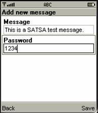
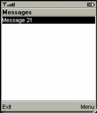
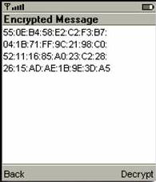
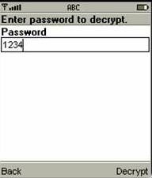
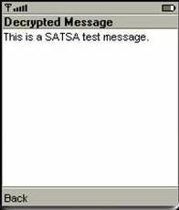
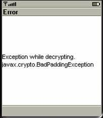
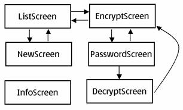
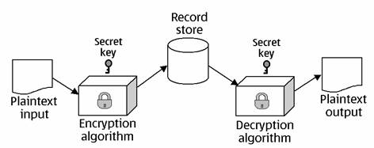
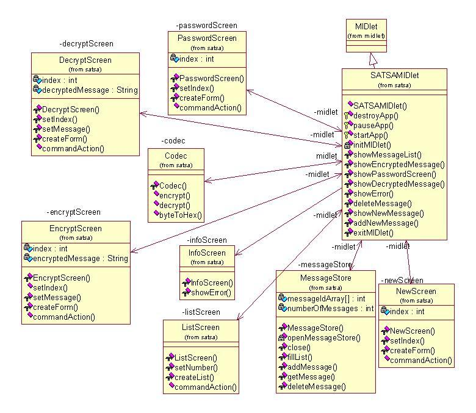

<!DOCTYPE HTML PUBLIC "-//W3C//DTD HTML 4.01 Transitional//EN" "http://www.w3.org/TR/html4/loose.dtd">
<!--NewPage-->
<HTML>
<HEAD>
<!-- Generated by javadoc (build 1.4.2_12) on Mon Jan 22 14:44:14 EET 2007 -->
<TITLE>
com.nokia.midp.examples.security.satsa
</TITLE>

<META NAME="keywords" CONTENT="com.nokia.midp.examples.security.satsa package">

<LINK REL ="stylesheet" TYPE="text/css" HREF="../../../../../../stylesheet.css" TITLE="Style">

<SCRIPT type="text/javascript">
function windowTitle()
{
    parent.document.title="com.nokia.midp.examples.security.satsa";
}
</SCRIPT>

</HEAD>

<BODY BGCOLOR="white" onload="windowTitle();">


<!-- ========= START OF TOP NAVBAR ======= -->
<A NAME="navbar_top"><!-- --></A>
<A HREF="#skip-navbar_top" title="Skip navigation links"></A>
<TABLE BORDER="0" WIDTH="100%" CELLPADDING="1" CELLSPACING="0" SUMMARY="">
<TR>
<TD COLSPAN=3 BGCOLOR="#EEEEFF" CLASS="NavBarCell1">
<A NAME="navbar_top_firstrow"><!-- --></A>
<TABLE BORDER="0" CELLPADDING="0" CELLSPACING="3" SUMMARY="">
  <TR ALIGN="center" VALIGN="top">
  <TD BGCOLOR="#FFFFFF" CLASS="NavBarCell1Rev"> &nbsp;<FONT CLASS="NavBarFont1Rev"><B>Package</B></FONT>&nbsp;</TD>
  <TD BGCOLOR="#EEEEFF" CLASS="NavBarCell1">    <FONT CLASS="NavBarFont1">Class</FONT>&nbsp;</TD>
  <TD BGCOLOR="#EEEEFF" CLASS="NavBarCell1">    <A HREF="package-use.html"><FONT CLASS="NavBarFont1"><B>Use</B></FONT></A>&nbsp;</TD>
  <TD BGCOLOR="#EEEEFF" CLASS="NavBarCell1">    <A HREF="package-tree.html"><FONT CLASS="NavBarFont1"><B>Tree</B></FONT></A>&nbsp;</TD>
  <TD BGCOLOR="#EEEEFF" CLASS="NavBarCell1">    <A HREF="../../../../../../deprecated-list.html"><FONT CLASS="NavBarFont1"><B>Deprecated</B></FONT></A>&nbsp;</TD>
  <TD BGCOLOR="#EEEEFF" CLASS="NavBarCell1">    <A HREF="../../../../../../index-all.html"><FONT CLASS="NavBarFont1"><B>Index</B></FONT></A>&nbsp;</TD>
  <TD BGCOLOR="#EEEEFF" CLASS="NavBarCell1">    <A HREF="../../../../../../help-doc.html"><FONT CLASS="NavBarFont1"><B>Help</B></FONT></A>&nbsp;</TD>
  </TR>
</TABLE>
</TD>
<TD ALIGN="right" VALIGN="top" ROWSPAN=3><EM>
</EM>
</TD>
</TR>

<TR>
<TD BGCOLOR="white" CLASS="NavBarCell2"><FONT SIZE="-2">
&nbsp;PREV PACKAGE&nbsp;
&nbsp;NEXT PACKAGE</FONT></TD>
<TD BGCOLOR="white" CLASS="NavBarCell2"><FONT SIZE="-2">
  <A HREF="../../../../../../index.html" target="_top"><B>FRAMES</B></A>  &nbsp;
&nbsp;<A HREF="package-summary.html" target="_top"><B>NO FRAMES</B></A>  &nbsp;
&nbsp;<SCRIPT type="text/javascript">
  <!--
  if(window==top) {
    document.writeln('<A HREF="../../../../../../allclasses-noframe.html"><B>All Classes</B></A>');
  }
  //-->
</SCRIPT>
<NOSCRIPT>
  <A HREF="../../../../../../allclasses-noframe.html"><B>All Classes</B></A>
</NOSCRIPT>

</FONT></TD>
</TR>
</TABLE>
<A NAME="skip-navbar_top"></A>
<!-- ========= END OF TOP NAVBAR ========= -->

<HR>
<H2>
Package com.nokia.midp.examples.security.satsa
</H2>
<div class="Section1">
<p class="MsoNormal">&nbsp;This simple encryption and decryption
example
demonstrates using some of the Security and Trust Services API 1.0
defined in
JSR 177.
<P>
<B>See:</B>
<BR>
&nbsp;&nbsp;&nbsp;&nbsp;&nbsp;&nbsp;&nbsp;&nbsp;&nbsp;&nbsp;<A HREF="#package_description"><B>Description</B></A>
<P>

<TABLE BORDER="1" WIDTH="100%" CELLPADDING="3" CELLSPACING="0" SUMMARY="">
<TR BGCOLOR="#CCCCFF" CLASS="TableHeadingColor">
<TD COLSPAN=2><FONT SIZE="+2">
<B>Class Summary</B></FONT></TD>
</TR>
<TR BGCOLOR="white" CLASS="TableRowColor">
<TD WIDTH="15%"><B><A HREF="../../../../../../com/nokia/midp/examples/security/satsa/Codec.html" title="class in com.nokia.midp.examples.security.satsa">Codec</A></B></TD>
<TD>Codec handles the encryption, decryption and displays encrypted
 data in hex format.</TD>
</TR>
<TR BGCOLOR="white" CLASS="TableRowColor">
<TD WIDTH="15%"><B><A HREF="../../../../../../com/nokia/midp/examples/security/satsa/DecryptScreen.html" title="class in com.nokia.midp.examples.security.satsa">DecryptScreen</A></B></TD>
<TD>DecryptScreen provides a UI to enter decrption information and decrypted
 messages.</TD>
</TR>
<TR BGCOLOR="white" CLASS="TableRowColor">
<TD WIDTH="15%"><B><A HREF="../../../../../../com/nokia/midp/examples/security/satsa/EncryptScreen.html" title="class in com.nokia.midp.examples.security.satsa">EncryptScreen</A></B></TD>
<TD>EncryptScreen provides a UI to enter encryption information and encrypted
 messages.</TD>
</TR>
<TR BGCOLOR="white" CLASS="TableRowColor">
<TD WIDTH="15%"><B><A HREF="../../../../../../com/nokia/midp/examples/security/satsa/InfoScreen.html" title="class in com.nokia.midp.examples.security.satsa">InfoScreen</A></B></TD>
<TD>An InfoScreen is a screen that shows errors to the user.</TD>
</TR>
<TR BGCOLOR="white" CLASS="TableRowColor">
<TD WIDTH="15%"><B><A HREF="../../../../../../com/nokia/midp/examples/security/satsa/ListScreen.html" title="class in com.nokia.midp.examples.security.satsa">ListScreen</A></B></TD>
<TD>ListScreen creates a menu list for the user to naviage to different
 screens.</TD>
</TR>
<TR BGCOLOR="white" CLASS="TableRowColor">
<TD WIDTH="15%"><B><A HREF="../../../../../../com/nokia/midp/examples/security/satsa/MessageStore.html" title="class in com.nokia.midp.examples.security.satsa">MessageStore</A></B></TD>
<TD>MessageStore manages all the message inventory in the RecordStore.</TD>
</TR>
<TR BGCOLOR="white" CLASS="TableRowColor">
<TD WIDTH="15%"><B><A HREF="../../../../../../com/nokia/midp/examples/security/satsa/NewScreen.html" title="class in com.nokia.midp.examples.security.satsa">NewScreen</A></B></TD>
<TD>NewScreen creates UI for user to enter the message and the password need to
 be encrypted.</TD>
</TR>
<TR BGCOLOR="white" CLASS="TableRowColor">
<TD WIDTH="15%"><B><A HREF="../../../../../../com/nokia/midp/examples/security/satsa/PasswordScreen.html" title="class in com.nokia.midp.examples.security.satsa">PasswordScreen</A></B></TD>
<TD>PasswordScreen allows the user to enter password to decrypt the message.</TD>
</TR>
<TR BGCOLOR="white" CLASS="TableRowColor">
<TD WIDTH="15%"><B><A HREF="../../../../../../com/nokia/midp/examples/security/satsa/SATSAMIDlet.html" title="class in com.nokia.midp.examples.security.satsa">SATSAMIDlet</A></B></TD>
<TD>SATSAMIDlet implements a simple set of security API defined in JSR 177.</TD>
</TR>
</TABLE>
&nbsp;

<P>
<A NAME="package_description"><!-- --></A><H2>
Package com.nokia.midp.examples.security.satsa Description
</H2>

<P>
<div class="Section1">
<p class="MsoNormal">&nbsp;This simple encryption and decryption
example
demonstrates using some of the Security and Trust Services API 1.0
defined in
JSR 177. <br>
<br style="">
<!--section contents-->
</p>
<h3>Section Contents</h3>
<blockquote style="margin-top: 5pt; margin-bottom: 5pt;">
  <p><a href="#1">1. About this example</a> </p>
  <p><a href="#2">2. Pre-requisites</a> </p>
  <p><a href="#3">3. Building and running</a> </p>
  <p><a href="#4">4. Design and implementation</a> </p>
  <p><a href="#5">5. Summary</a> </p>
</blockquote>
<div class="MsoNormal" align="center" style="text-align: center;">
<hr size="2" width="100%" align="center"></div>
<h3><a name="1">1. About this example</a> </h3>
<blockquote style="margin-top: 5pt; margin-bottom: 5pt;">
  <p>This example implements SATSA-PKI and SATSA-CRYPTO APIs.<span
 style="">&nbsp; </span>It allows the user to store messages
that are encrypted with 128 bit AES (Advanced Encryption Standard) key.<span
 style="">&nbsp; </span>The AES Encryption is symmetric, i.e.
there is only one key, which is used for both encryption and decryption.<span
 style="">&nbsp; </span></p>
</blockquote>
<h3><a name="2">2. Pre-requisites</a> </h3>
<blockquote style="margin-top: 5pt; margin-bottom: 5pt;">
  <p>The example makes use of the standard MIDP application framework
and SATSA
API. The reader should be familiar with these areas before attempting
to
understand this example.<span style="">&nbsp; </span>Some
knowledge of the basics of cryptography, network security and x.509
certificates is also recommended.</p>
</blockquote>
<h3><a name="3">3. Building and running</a> </h3>
<blockquote style="margin-top: 5pt; margin-bottom: 5pt;">
  <p>The example is built using the standard method for building and
running as
described in <a
 href="../../../../../../../../../doc-files/building.html">Building
and running the examples.</a></p>
  <p>The following classes should be included in the jar:</p>
  <blockquote style="margin-top: 5pt; margin-bottom: 5pt;">
    <p class="MsoNormal">com.nokia.midp.examples.security.satsa.*</p>
  </blockquote>
  <p>When the user starts the <span class="SpellE">MIDlet</span>, a
menu appears on
the screen, allowing the user to start to create a new message.</p>
  <p><br>
  </p>
  <p style="margin-left: 140pt; text-indent: 0.5in;"><!--[if gte vml 1]> <![endif]--></p>
  <p><br>
After the user clicks the &#8220;Create New&#8221; menu item, the following screen
allows the user to enter the message and password for encryption
purpose.</p>
  <p style="margin-left: 140pt; text-indent: 0.5in;"><!--[if gte vml 1]><![endif]--></p>
  <p>After the user saves the message, the following screen appears to
display
the list of the messages created by the user.</p>
  <p style="margin-left: 140pt; text-indent: 0.5in;"><!--[if gte vml 1]><![endif]--></p>
  <p>If the user clicks on the Menu button, the user can choose to show
the list
of messages stored in the device.</p>
  <p style="margin-left: 140pt; text-indent: 0.5in;"><!--[if gte vml 1]><![endif]--></p>
  <p>The detail information of the message in hex presentation will
appear on the
following screen after the user click on &#8220;Show&#8221; menu item.</p>
  <p style="margin-left: 140pt; text-indent: 0.5in;"><!--[if gte vml 1]><![endif]--></p>
  <p>The user press &#8220;Decrypt&#8221;, the application asks for the AES
password
in the following screen.</p>
  <p></p>
  <p style="margin-left: 140pt; text-indent: 0.5in;"><!--[if gte vml 1]><![endif]--></p>
  <p>The user press &#8220;Decrypt&#8221;, the message will be displayed on the
following screen.</p>
  <p style="margin-left: 140pt; text-indent: 0.5in;"><!--[if gte vml 1]><![endif]--></p>
  <p>If the password is incorrect, the following screen will appear.</p>
  <p></p>
  <p style="margin-left: 140pt; text-indent: 0.5in;"><!--[if gte vml 1]><![endif]--></p>
  <p><o:p>&nbsp;</o:p></p>
  <p><o:p>&nbsp;</o:p></p>
  <p style="margin-bottom: 12pt;"><o:p>&nbsp;</o:p></p>
</blockquote>
<h3><a name="4">4. Design and implementation</a> <span style="">&nbsp;&nbsp;&nbsp;&nbsp;&nbsp;&nbsp;&nbsp;</span><span
 style="">&nbsp;</span><span style="">&nbsp;</span><span style="">&nbsp;&nbsp;&nbsp;</span></h3>
<p style="margin-left: 0.5in;">The MIDlet&#8217;s user interface has five
views
for operation. One is used for scrolling through and selecting
previously saved
messages, one is for entering a new message to be stored in the record
store of
the device, and three are used for displaying the message in both
encrypted and
decrypted form.<span style="">&nbsp; </span>In addition,
InfoScreen is used for displaying error messages.<span style="">&nbsp; </span>A
UI screen for the Security MIDlet is
shown below:</p>
<p class="BodyCopy"><o:p>&nbsp;</o:p></p>
<p class="BodyCopy" align="center"
 style="margin-left: 45pt; text-align: center; page-break-after: avoid;"><!--[if gte vml 1]>
 <![endif]--></p>
<p style="text-indent: 0.5in;">Simplified cryptographic model used in
this example
is shown below:</p>
<p style="margin-left: 45pt; text-indent: 0.5in;"><!--[if gte vml 1]><![endif]--></p>
<p class="MsoNormal"><b style=""><o:p>&nbsp;</o:p></b></p>
<blockquote style="margin-top: 5pt; margin-bottom: 5pt;">
  <p>A UML class diagram for the Security MIDlet is shown below:</p>
  <p></p>
</blockquote>
<h3><a name="5">5. Summary</a> </h3>
<blockquote style="margin-top: 5pt; margin-bottom: 5pt;">
  <p>This example illustrates the implementation of a simple security
prototype that
uses the MIDP SATSA1.0.</p>
</blockquote>
<p class="MsoNormal" style="margin-bottom: 12pt;"><br>
<br>
<br>
<br>
<br>
<br>
<br>
<br>
<br style="">
</p>
</div>
<P>

<P>
<HR>


<!-- ======= START OF BOTTOM NAVBAR ====== -->
<A NAME="navbar_bottom"><!-- --></A>
<A HREF="#skip-navbar_bottom" title="Skip navigation links"></A>
<TABLE BORDER="0" WIDTH="100%" CELLPADDING="1" CELLSPACING="0" SUMMARY="">
<TR>
<TD COLSPAN=3 BGCOLOR="#EEEEFF" CLASS="NavBarCell1">
<A NAME="navbar_bottom_firstrow"><!-- --></A>
<TABLE BORDER="0" CELLPADDING="0" CELLSPACING="3" SUMMARY="">
  <TR ALIGN="center" VALIGN="top">
  <TD BGCOLOR="#FFFFFF" CLASS="NavBarCell1Rev"> &nbsp;<FONT CLASS="NavBarFont1Rev"><B>Package</B></FONT>&nbsp;</TD>
  <TD BGCOLOR="#EEEEFF" CLASS="NavBarCell1">    <FONT CLASS="NavBarFont1">Class</FONT>&nbsp;</TD>
  <TD BGCOLOR="#EEEEFF" CLASS="NavBarCell1">    <A HREF="package-use.html"><FONT CLASS="NavBarFont1"><B>Use</B></FONT></A>&nbsp;</TD>
  <TD BGCOLOR="#EEEEFF" CLASS="NavBarCell1">    <A HREF="package-tree.html"><FONT CLASS="NavBarFont1"><B>Tree</B></FONT></A>&nbsp;</TD>
  <TD BGCOLOR="#EEEEFF" CLASS="NavBarCell1">    <A HREF="../../../../../../deprecated-list.html"><FONT CLASS="NavBarFont1"><B>Deprecated</B></FONT></A>&nbsp;</TD>
  <TD BGCOLOR="#EEEEFF" CLASS="NavBarCell1">    <A HREF="../../../../../../index-all.html"><FONT CLASS="NavBarFont1"><B>Index</B></FONT></A>&nbsp;</TD>
  <TD BGCOLOR="#EEEEFF" CLASS="NavBarCell1">    <A HREF="../../../../../../help-doc.html"><FONT CLASS="NavBarFont1"><B>Help</B></FONT></A>&nbsp;</TD>
  </TR>
</TABLE>
</TD>
<TD ALIGN="right" VALIGN="top" ROWSPAN=3><EM>
</EM>
</TD>
</TR>

<TR>
<TD BGCOLOR="white" CLASS="NavBarCell2"><FONT SIZE="-2">
&nbsp;PREV PACKAGE&nbsp;
&nbsp;NEXT PACKAGE</FONT></TD>
<TD BGCOLOR="white" CLASS="NavBarCell2"><FONT SIZE="-2">
  <A HREF="../../../../../../index.html" target="_top"><B>FRAMES</B></A>  &nbsp;
&nbsp;<A HREF="package-summary.html" target="_top"><B>NO FRAMES</B></A>  &nbsp;
&nbsp;<SCRIPT type="text/javascript">
  <!--
  if(window==top) {
    document.writeln('<A HREF="../../../../../../allclasses-noframe.html"><B>All Classes</B></A>');
  }
  //-->
</SCRIPT>
<NOSCRIPT>
  <A HREF="../../../../../../allclasses-noframe.html"><B>All Classes</B></A>
</NOSCRIPT>

</FONT></TD>
</TR>
</TABLE>
<A NAME="skip-navbar_bottom"></A>
<!-- ======== END OF BOTTOM NAVBAR ======= -->

<HR>

</BODY>
</HTML>
